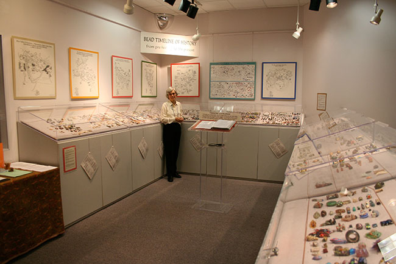
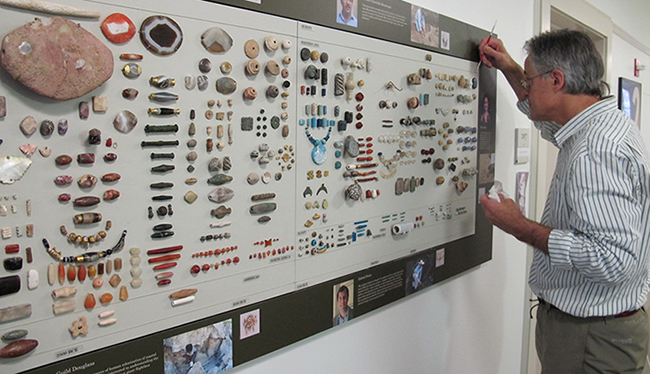

A Brief History of the Bead Society of Greater Washington and the Bead Museum in Washington, DC

In 1983, the Bead Society of Greater Washington was founded by twelve original members and bead historian Peter Francis, Jr., as a forum for studying and disseminating knowledge about beads. It quickly grew to offer a full range of activities - monthly lectures and programs, a lending library, semi-annual bead bazaars, special outreach programs, exhibits to schools and libraries, a Newsletter, and a research library. In less than a decade it grew to several hundred members and went on to organize two international bead conferences, the latter raising funds in 1995 to found The Bead Museum in Washington DC with the support of nationwide bead societies and individual contributors.
For a decade, through its museum, the Society fulfilled its outreach mission. The Museum focused on enhancing public appreciation of beads and ornaments as subjects of serious study as well as objects of beauty and enjoyment. It organized more than twenty exhibits, on major aspects of African, South Asian, Bohemian, Venetian, contemporary American, Middle Eastern, and Naga beads and beadwork. Other exhibits focused on world trade routes and history, as well as cross-cultural topics such as how beads are and have been used in religious contexts.
In 1998, the Museum launched its centerpiece Bead Timeline of History project to document history told through the beads people have created, worn, and treasured through the ages. Beads and beaded ornaments bridge geographic, socio-economic, and cultural divides suggesting common ground among diverse communities. The Timeline, which included approximately 5000 beads, dated and placed them geographically from 10,000 BCE, identified them, and related them to historical cultures and technologies.
The Museum published catalogues for several of its exhibits, adding significantly to serious bead literature. Its Timeline Book, Part I, from Prehistory to 1200 CE, is now widely used as a reference book. The Museum also included a 1400 volume reference library, which was available for public and scholarly use.
After the closure of the Museum in December, 2008, BSGW donated the Bead Timeline of History to the Peabody Museum of Natural History at Yale University. The members of the Bead Society of Greater Washington are delighted that two panels from it are currently on display at 51 Hillhouse, the offices of the Archaeological Studies program, in connection with displays of recent archaeological and anthropological research relevant in some way to beads and beadwork being carried out by students and professors. BSGW continues to support research and displays connected with the beads.
The donation of the bead collection to the Yale Peabody Museum of Natural History.

The Council on Archaeological Studies and the Peabody Museum are the 2010 beneficiary of an extraordinary labor of love, a 37 foot multi-component panel entitled The Bead Timeline, The Timeline presents roughly 5,000 beads from around the world, spanning 10,000 years ago to the present. The donation also includes some 20,000 associated loose beads. The museum already houses many hundreds of beads from various Yale excavations around the world. The Council's lodging, 51 Hillhouse Avenue, houses an exhibition that uses the bead as a vehicle to demonstrate how archaeologists and historical scientists reconstruct the interconnectedness of ancient peoples' aesthetic, artisan, economic, and sacred lives.
Rather than a story with a single narrative line, this exhibition tells the story of the extraordinary diversity of meanings, scientific clues, and the commonality of the bead. Two of the seven original Timeline panels display, at a glance, the diversity of beads circulating throughout the world at any given time. The Timeline is supplemented by several thematic displays, either featuring specific faculty or student research (laser ablation inductively coupled plasma-mass spectrometry (ICPMS) of beads passing along the "pre-Silk Routes" of Mongolia - Bill Honeychurch; beads made from giant Madagascar bird eggshell as currency of trade and contact in earliest western Indian Ocean maritime trade - Kristina Guild), or featuring other "autonomous" beads of interest (e.g., jade beads as high status markers in Chinese Neolithic burials - Anne Underhill; beads as funerary offerings during the Bronze Age of Nubia, parts of the Peabody's vast holdings of Egyptian and Nubian collections from Yale expeditions - Maria Gatto).